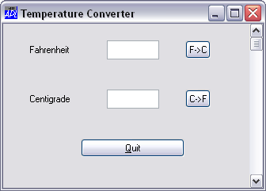
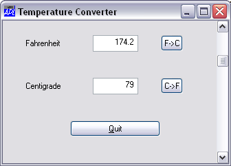

Another way to improve the application would be to allow the user to input using a slider or scrollbar. Let's create one called 'TEMP.S' ...
SCR←'Scroll' ('Range' 101)('Event' 'Scroll' 'C2F')
'TEMP.S' ⎕WC SCR
The range of a scrollbar goes from 1 to the value of the Range property. Setting Range to 101 will give us a range of 1-101. You will see in a moment why we need to do this. The Scroll event will be generated whenever the user moves the scrollbar. We have associated it with the callback function 'C2F' which we will define as follows:
∇ C2F MSG [1] ⍝ Callback for Centigrade input via scrollbar [2] TEMP.C.Value←101-4⊃MSG [3] TEMP.F.Value←32+TEMP.C.Value÷5÷9 ∇
The Event message MSG contains information about the Scroll event. Its 4th element contains the requested thumb position. As we want to go from 0 at the top, to 100 at the bottom, we need to subtract this value from 101. This is done in line 2 of the function. C2F[3] calculates the corresponding Fahrenheit value.
Try moving the scrollbar and see what happens...
